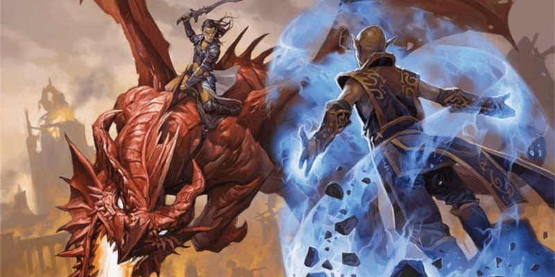

Sous-classes psioniques (v2)
Cet Unearthed Arcana propose de nouvelles options de sous-classes :
- Chevalier psi (guerrier)
- Coutelâme (roublard)
- Âme psionique (ensorceleur)
Ainsi que de nouveaux sorts et de nouveaux dons.
Qu'est-ce que le pouvoir psionique?
Le multivers de D&D est rempli de forces surnaturelles. Certaines émanent des royaumes des dieux, d'autres imprègnent le cosmos, et d'autres encore proviennent de l'esprit. Cette dernière force, la puissance de l'esprit, est appelée psi, ou puissance psionique. Des créatures comme les flagelleurs mentaux et les githyanki manient le pouvoir psionique pour canaliser la magie des sorts et créer d'autres phénomènes extraordinaires.
Les psi dans les éditions antérieures de D&D
LE PSI EST-IL UNE FORME DE MAGIE ?
Le psi est un pouvoir surnaturel qui émane de l'esprit. Comme d'autres formes de pouvoir surnaturel dans D&D, il peut être utilisé pour créer des phénomènes magiques, mais il peut également créer d'autres types de phénomènes. Dans les règles du jeu, seuls certains effets surnaturels sont classés comme magiques : les objets magiques, les sorts, les attaques avec un sort, les pouvoirs alimentés par les emplacements de sorts et tout autre effet que les règles désignent explicitement comme étant magique. Cette distinction est rarement pertinente en jeu et n'est généralement importante que lorsque quelque chose comme un champ antimagie apparaît.
Du point de vue de la narration, certains effets surnaturels dans D&D tissent leur pouvoir dans une forme normalisée (un sort, par exemple) que d'autres effets peuvent perturber. En revanche, il existe d'autres effets surnaturels qui sont si sauvages, sans forme ou si subtils qu'il est difficile ou impossible de les perturber. Dans cet article, certains des pouvoirs psioniques créent ce que les règles considèrent être de la magie, et d'autres non.
Les différentes éditions de D&D ont créé des règles parfois très différentes les unes des autres pour les pouvoirs psioniques, mais malgré ces différences de règles entre éditions, certains éléments n'ont jamais varié :
- Les pouvoirs psioniques proviennent de son utilisateur plutôt que d'une source externe.
- L'aptitude psionique peut être utilisée pour lancer des sorts, ainsi que pour créer des effets qui vont au-delà des limites des sorts.
- À D&D, les pouvoirs associés au psi sont similaires à ceux qui apparaissent dans d'autres médias qui montrent également des personnages psioniques : la télépathie, la télékinésie, la clairvoyance, etc.
Les psi dans la 5ème édition
Les créatures et les capacités psioniques font partie de la 5ème édition depuis son lancement en 2014. Des monstres et des PNJ dotés de pouvoirs psioniques apparaissent dans un certain nombre de livres comme le Monster Manual, Volo’s Guide to Monsters, Mordenkainen’s Tome of Foes, Out of the Abyss, Guildmasters’ Guide to Ravnica, Acquisitions Incorporated et Eberron: Rising from the Last War.
En 2017, nous avons proposé une classe de personnage non officielle, le mystique, axée sur les pouvoirs psioniques. À travers ses capacités et ses sous-classes, le mystique permettait de créer un personnage qui faisait écho aux capacités des autres classes du jeu mais avec une touche psionique. Pourtant, autant de nombreux testeurs appréciaient les thèmes psioniques du mystique, les commentaires étaient également clairs sur le fait que la classe empiétait sur le territoire d'autres classes et qu'elle était souvent trop complexe, trop puissante, ou les deux. Suite à cela, nous avons décidé d'oublier le mystique et d'explorer d'autres façons de donner aux joueurs des pouvoirs sur le thème des psioniques, comme nous l'avions fait avec les capacités du Grand Ancien dans le Manuel des Joueurs. Depuis 2019, nous cherchons maintenant à fournir des options (sous-classes, sorts et dons) qui permettent à différents types de personnages de manifester une puissance psionique.
La philosophie de cette approche est plus proche de celle adoptée dans la 1ère édition de D&D, où les pouvoirs psioniques n'étaient pas le domaine d'une classe particulière mais disponibles pour différents types de personnages. Nous avons donc conçu les nouvelles options de cet article pour qu'elles puissent fonctionner de manière transparente avec le D&D auquel vous jouez déjà. Et écoutant votre désir d'avoir des options psioniques semblables aux autres, nous avons aussi tissé un fil conducteur à travers les sous-classes et les exploits psioniques : le dé de Talent psionique.
Guerrier
Au niveau 3, un guerrier gagne la capacité Archétype martial. Voici une nouvelle option d'archétypes : le chevalier psi.
Chevalier psi
Sensible et éveillé aux pouvoirs psioniques, un chevalier psi est un guerrier qui augmente et renforce sa puissance physique à l'aide de frappes d'armes imprégnées psychiquement, de coups de fouet télékinétiques ou de barrières de force mentale. De nombreux githyanki s'entraînent pour devenir de tels chevaliers, tout comme certains hauts elfes parmi les plus disciplinés. Dans le monde d'Athas, des gladiateurs de renom dans les arènes des rois-sorciers sont souvent des chevaliers psi, et à Eberron le kalashtar psionique considère l'appartenance à cette chevalerie comme un honneur spécial.
En tant que chevalier psi, vous avez peut-être perfectionné vos capacités psioniques grâce à une discipline solitaire, ou bien les avez-vous déverrouillées sous la tutelle d'un maître ou dans une académie dédiée à l'usage du pouvoir de l'esprit comme arme et bouclier.
Talent psionique
Capacité de chevalier psi de niveau 3
Vous abritez en vous une source de puissance psionique, une énergie qui reflue et coule lorsque vous la canalisez de diverses manières. Ce pouvoir est représenté par votre dé de Talent psionique, dont la taille de départ est un d6.
Options de talents psioniques. Vous pouvez utiliser votre dé de Talent psionique de la manière suivante :
- Champ de protection. Lorsque vous ou une autre créature que vous pouvez voir dans un rayon de 9 mètres autour de vous subit des dégâts, vous pouvez utiliser votre réaction pour lancer votre dé de Talent psionique et réduire les dégâts subis du nombre obtenu plus votre modificateur d'Intelligence (réduction minimale de 1), créant momentanément un bouclier de force télékinétique.
- Saut de psi. Lorsque vous effectuez un saut en hauteur ou en longueur, vous pouvez lancer votre dé de Talent psionique et étendre la distance du saut jusqu'à un nombre de mètres égal aux 2/3 de la somme du nombre obtenu et de votre modificateur d'Intelligence (minimum 30 cm supplémentaires). Cette distance supplémentaire ne vous coûte que 30 cm de mouvement.
- Frappe télékinétique. Vous pouvez propulser vos attaques avec une force télékinétique. Une fois à chacun de vos tours, immédiatement après avoir infligé des dégâts à une cible à 9 mètres ou moins de vous lors d'une attaque avec par arme, vous pouvez lancer votre dé de Talent psionique et également infliger à la cible des dégâts de force égaux au nombre obtenu.
Modification de la taille du dé. Si vous lancez le nombre le plus élevé sur votre dé de Talent psionique, il diminue d'une taille de dé après le jet. Cela représente le fait que vous brûlez votre énergie psionique. Par exemple, si le dé est un d6 et que vous obtenez un 6, il devient un d4. Si c'est un d4 et que vous obtenez un 4, il devient inutilisable jusqu'à ce que vous ayez terminé un repos long. Inversement, si vous lancez un 1 sur votre dé Talent psionique, il augmente d'une taille de dé après le jet, jusqu'à sa taille de départ. Cela signifie que vous conservez de l'énergie psionique pour une utilisation ultérieure. Par exemple, si vous lancez un 1 sur un d4, le dé devient alors un d6. Chaque fois que vous terminez un repos long, votre dé de Talent psionique retrouve sa taille de départ.
Lorsque vous atteignez certains niveaux, la taille de départ de votre dé de Talent psionique augmente : au niveau 5 (d8), au niveau 11 (d10) et au niveau 17 (d12). Si vous avez un dé de Talent psionique provenant d'une autre source, comme d'une capacité de classe, vous n'obtenez pas plus d'un dé ; utilisez uniquement celui avec la plus grande taille de départ.
- Reconstitution du psi. Par une action bonus, vous pouvez calmer votre esprit un instant et restaurer votre dé de Talent psionique à sa taille de départ. Vous ne pourrez alors plus utiliser la Reconstitution du psi avant d'avoir terminé un repos long.
Adepte télékinétique
Capacité de chevalier psi de niveau 7
Vous maîtrisez de nouvelles façons d'utiliser votre télékinésie :
- Poussée psionique. Lorsque vous infligez des dégâts à une cible avec la Frappe télékinétique de votre Talent psionique, vous pouvez forcer la cible à effectuer un jet de sauvegarde de Force contre un DD égal à 8 + votre bonus de maîtrise + votre modificateur d'Intelligence. À moins que la sauvegarde ne réussisse, vous pouvez mettre à terre la cible ou la déplacer horizontalement jusqu'à 6 mètres dans n'importe quelle direction .
- Mouvement télékinetique. Si votre dé de Talent psionique est disponible, vous pouvez déplacer un objet ou une créature avec votre esprit. Par une action, vous ciblez un objet non tenu de taille G ou plus petit ou une créature consentante, autre que vous-même. Si vous pouvez voir la cible et qu'elle est à 9 mètres ou moins de vous, vous pouvez la déplacer jusqu'à 6 mètres vers un espace inoccupé que vous pouvez voir. Par ailleurs, s'il s'agit d'un objet de taille TP, vous pouvez le déplacer vers ou depuis votre main. Dans les deux cas, vous pouvez déplacer la cible horizontalement, verticalement ou les deux. Lorsque vous effectuez cette action, votre dé de Talent psionique diminue d'une taille de dé.
Métabolisme amélioré par le psi
Capacité de chevalier psi de niveau 10
L'énergie psionique qui vous traverse a renforcé votre esprit et votre corps. Vous gagnez la résistance au poison et aux dommages psychiques, et vous êtes immunisé contre l'état empoisonné.
Rempart de force
Capacité de chevalier psi de niveau 15
Vous pouvez vous protéger et protéger les autres avec une force télékinétique. Par une action bonus, vous pouvez choisir des créatures, qui peuvent vous inclure, que vous pouvez voir dans un rayon de 9 mètres autour de vous, jusqu'à concurrence d'un nombre de créatures égal à votre modificateur d'Intelligence (minimum une créature). Chacune des créatures choisies est protégée par un abri partiel (50 %) pendant 1 minute ou jusqu'à ce que vous soyez incapable d'agir. Une fois que vous avez utilisé cette capacité, vous devez terminer un repos long avant de pouvoir l'utiliser à nouveau, à moins que vous ne réduisiez votre dé de Talent Psionique d'une taille de dé pour utiliser à nouveau cette capacité.
Maître télékinétique
Capacité de chevalier psi de niveau 18
Votre capacité à déplacer des créatures et des objets avec votre esprit n'a pas d'équivalent. Si votre dé de Talent psionique est disponible, vous pouvez lancer le sort télékinésie sans aucune composante. Votre caractéristique d'incantation pour le sort est l'Intelligence. Lorsque vous lancez ce sort, votre dé de Talent psionique diminue d'une taille de dé.
Roublard
Au niveau 3, un roublard gagne la capacité Archétype de roublard. Voici une nouvelle option d'archétype : le coutelâme.
Coutelâme
La plupart des assassins frappent avec des armes physiques, et de nombreux cambrioleurs et espions utilisent des outils de voleurs pour infiltrer des endroits sûrs. Le coutelâme frappe et s'infiltre avec l'esprit, franchissant les barrières physiques et psychiques. Ces roublards découvrent le pouvoir psionique qu'ils ont en eux et le canalisent pour faire leur travail malicieux. Ils trouvent facilement un emploi en tant que membres de guildes de voleurs, bien que les roublards se méfient de quiconque utilise d'étranges pouvoirs mentaux pour mener des affaires, et la plupart des gouvernements seraient heureux d'employer un coutelâme en tant qu'espion. Au milieu des arbres de forêts anciennes sur le plan matériel et dans la Féerie, certains elfes des bois empruntent la voie du coutelâme, servant de gardiens silencieux de leurs bois. Dans la guerre sans fin entre les gith, un githzerai est encouragé à devenir un coutelâme quand la furtivité est requise contre l'ennemi githyanki, et dans le monde d'Athas, un roi-sorcier se tourne souvent vers un coutelâme pour éliminer un ennemi, tout comme un insurgé coutelâme cherchera à saper la règle de ce roi-sorcier.
En tant que coutelâme, vos capacités psioniques pourraient vous hanter depuis votre enfance, mais n'avoir révélé leur potentiel que depuis que vous avez vécu le stress de l'aventure. Ou vous pourriez avoir cherché un ordre reclus d'adeptes psioniques et avoir passé des années à apprendre à manifester votre pouvoir.
Talent psionique
Capacité de coutelâme de niveau 3
Vous abritez en vous une source de puissance psionique, une énergie qui reflue et coule lorsque vous la canalisez de diverses manières. Ce pouvoir est représenté par votre dé de Talent psionique, dont la taille de départ est un d6.
Options de talents psioniques. Vous pouvez utiliser votre dé de Talent psionique de la manière suivante :
- Truc de psi. Lorsque votre formation non psionique vous lâche, vous pouvez utiliser votre pouvoir psionique pour vous aider : si vous échouez à un jet de caractéristique en utilisant une compétence ou un outil que vous maîtrisez, vous pouvez lancer votre dé de Talent psionique et ajouter le nombre obtenu au jet de caractéristique, ce qui peut potentiellement transformer l'échec en succès.
- Murmures psychiques. Vous pouvez utiliser vos capacités psychiques pour établir une communication télépathique entre vous et les autres, ce qui est parfait pour une infiltration silencieuse. Par une action, vous vous donnez ainsi qu'à au moins une autre créature la capacité de parler télépathiquement avec vous. Dans ce cas, lancez votre dé de Talent psionique et choisissez les créatures que vous pouvez voir, jusqu'à concurrence du nombre obtenu. Durant 1 heure, les créatures choisies peuvent parler télépathiquement avec vous, et vous pouvez parler télépathiquement avec elles. Pour envoyer ou recevoir un message (aucune action n'est requise), vous et l'autre créature devez être au maximum à 1,5 kilomètre l'un de l'autre. Une créature ne peut pas utiliser cette télépathie si elle ne parle aucune langue, et une créature peut mettre fin à la connexion télépathique à tout moment (aucune action n'est requise). Vous et la créature n'avez toutefois pas besoin de parler une langue commune pour vous comprendre.
Modification de la taille du dé. Si vous lancez le nombre le plus élevé sur votre dé de Talent psionique, il diminue d'une taille de dé après le jet. Cela représente le fait que vous brûlez votre énergie psionique. Par exemple, si le dé est un d6 et que vous obtenez un 6, il devient un d4. Si c'est un d4 et que vous obtenez un 4, il devient inutilisable jusqu'à ce que vous ayez terminé un repos long. Inversement, si vous lancez un 1 sur votre dé Talent psionique, il augmente d'une taille de dé après le jet, jusqu'à sa taille de départ. Cela signifie que vous conservez de l'énergie psionique pour une utilisation ultérieure. Par exemple, si vous lancez un 1 sur un d4, le dé devient alors un d6. Chaque fois que vous terminez un repos long, votre dé de Talent psionique retrouve sa taille de départ.
Lorsque vous atteignez certains niveaux, la taille de départ de votre dé de Talent psionique augmente : au niveau 5 (d8), au niveau 11 (d10) et au niveau 17 (d12). Si vous avez un dé de Talent psionique provenant d'une autre source, comme d'une capacité de classe, vous n'obtenez pas plus d'un dé ; utilisez uniquement celui avec la plus grande taille de départ.
- Reconstitution du psi. Par une action bonus, vous pouvez calmer votre esprit un instant et restaurer votre dé de Talent psionique à sa taille de départ. Vous ne pourrez alors plus utiliser la Reconstitution du psi avant d'avoir terminé un repos long.
Lames psychiques
Capacité de coutelâme de niveau 3
Vous pouvez manifester votre puissance psionique sous la forme de lames scintillantes d'énergie psychique. Lorsque vous êtes sur le point de réaliser une attaque au corps à corps ou à distance avec une arme contre une créature, vous pouvez faire apparaître une lame psychique depuis votre main libre et effectuer l'attaque avec cette lame. Cette lame magique est une arme de corps à corps courante avec les propriétés finesse et lancer. Elle a une portée nominale de 18 mètres mais pas de longue portée, et si le coup touche elle inflige des dégâts psychiques égaux à 1d6 plus le modificateur de la caractéristique que vous avez utilisé pour le jet d'attaque. La lame disparaît immédiatement après avoir touché ou raté sa cible, et elle ne laisse aucune marque sur sa cible si elle inflige des dégâts. Après avoir attaqué avec la lame, vous pouvez effectuer une attaque au corps à corps ou à distance avec une deuxième lame psychique au prix d'une action bonus durant le même tour, à condition que votre autre main soit libre de la créer. Le dé de dégâts de cette attaque bonus est de 1d4 au lieu de 1d6.
Lames de l'âme
Capacité de coutelâme de niveau 9
Vos Lames psychiques sont maintenant une expression de votre âme imprégnée de psi, vous donnant un contrôle plus fin sur elles de la manière suivante :
- Frappes autoguidées. Si vous effectuez un jet d'attaque avec vos Lames psychiques et que vous manquez la cible, vous pouvez lancer votre dé de Talent psionique et ajouter le nombre obtenu au jet d'attaque. Si cela fait réussir l'attaque, votre dé de Talent psionique diminue d'une taille de dé, quel que soit le nombre obtenu.
- Téléportation psychique. Si votre dé de Talent psionique est disponible, vous pouvez lancer vos Lames psychiques pour vous transporter magiquement vers un autre endroit. Par une action bonus, vous faites apparaître l'une de vos Lames psychiques et la jetez dans un espace inoccupé que vous pouvez voir, jusqu'à un nombre de mètres égal à 1,5 fois le nombre le plus élevé de votre dé de Talent Psionique. Vous vous téléportez ensuite dans cet espace, la lame disparaît et votre dé de Talent psionique diminue d'une taille de dé.
Voile psionique
Capacité de coutelâme de niveau 13
Vous pouvez tisser un voile psychique pour vous masquer. Par une action, vous pouvez devenir invisible magiquement, avec tout ce que vous portez ou transportez, pendant 10 minutes ou jusqu'à ce que vous annuliez cet effet (aucune action n'est requise). Cette invisibilité prend fin si vous infligez des blessures à une créature ou si vous forcez une créature à effectuer un jet de sauvegarde. Une fois que vous avez utilisé cette capacité, vous devez terminer un repos long avant de pouvoir l'utiliser à nouveau, à moins que vous ne réduisiez votre dé de Talent Psionique d'une taille de dé pour utiliser à nouveau cette capacité.
Esprit déchiré
Capacité de coutelâme de niveau 17
Vous pouvez lancer vos Lames psychiques directement dans l’esprit d’une créature. Lorsque vous utilisez vos Lames psychiques pour infliger des dégâts d'Attaque sournoise à une créature, vous pouvez forcer cette cible à effectuer un jet de sauvegarde de Sagesse (DD égal à 8 + votre bonus de maîtrise + votre modificateur de Dextérité). À moins que la sauvegarde ne réussisse, la cible est étourdie jusqu'à la fin de votre prochain tour. Une fois que vous avez utilisé cette capacité,vous devez terminer un repos long avant de pouvoir l'utiliser à nouveau, à moins que vous ne réduisiez votre dé de Talent Psionique d'une taille de dé pour utiliser à nouveau cette capacité.
Ensorceleur
Au niveau 1, un ensorceleur gagne la capacité Origine magique. Voici une nouvelle option d'origine : l'âme psionique
Âme psionique
Un jour, une lumière a éclaté en vous : l'illumination du pouvoir psionique. Votre esprit frémit maintenant avec ce pouvoir, dont vous ne saisirez pas l'étendue avant des années. Vous pouvez toucher d'autres esprits avec lui et modifier le monde qui vous entoure en l'utilisant pour contrôler l'énergie magique du multivers. Ce pouvoir qui brille en vous sera-t-il une balise d'espoir pour les autres ? Ou serez-vous une source de terreur pour ceux qui ressentent les frappes de votre esprit et assistent aux étranges manifestations de votre puissance ?
Parmi les githyanki et les githzerai, les pouvoirs des âmes psioniques sont vénérés et mobilisés des deux côtés de la guerre entre gith. À Eberron, beaucoup de kalashtar rêvent de découvrir les capacités de cette origine en eux-mêmes, et à Athas, plus d'ensorceleurs naissent avec une âme psionique qu'avec toute autre source de pouvoir. Dans les clairières des bois primitifs touchés par la Féerie, les enfants s'éveillent parfois aux merveilles du pouvoir psionique. Et dans les communautés qui survivent aux incursions du Royaume lointain, certaines personnes se mutent en d'horribles aberrations, tandis que quelques chanceux non seulement restent eux-mêmes mais découvrent également que l'énergie psionique imprègne désormais leur esprit.
En tant qu'âme psionique, vous décidez comment vous avez acquis vos pouvoirs. Êtes-vous né avec eux et se sont-ils manifestés tout au long de votre enfance ? Ou un événement extraordinaire plus tard dans votre vie a-t-il fait briller votre conscience psionique ? Consultez le tableau ci-dessous pour découvrir de possibles origines à votre pouvoir.
| d10 | Origine |
|---|---|
| 1 | Vous avez été exposé à l'influence déformante du Royaume lointain. Vous pouvez maintenant utiliser votre esprit d'une manière que vous n'auriez jamais cru possible, et vous êtes également convaincu qu'un filament se développe sur vous. |
| 2 | Un vent psychique du plan Astral a transporté de l'énergie psionique dans votre être. Maintenant, lorsque vous utilisez vos pouvoirs, de légers rayons de lumière scintillent autour de vous. |
| 3 | Vous ou votre ancêtre avez été formé par un moine githzerai qui a débloqué votre potentiel psionique. |
| 4 | Un esprit hante votre esprit, conférant une puissance incroyable à vos pensées. Lorsque vous dormez, les souvenirs de l’esprit envahissent vos rêves. |
| 5 | Au fond d'une forêt touchée par la Féerie, vous avez bu à un ruisseau scintillant, et maintenant votre esprit brille de puissance. Les bêtes et les créatures féeriques sont souvent désormais amicales avec vous, comme si elles pouvaient sentir la lumière en vous. |
| 6 | En récupérant d'une blessure quasi mortelle, vous vous êtes retrouvé avec des pouvoirs psioniques. Chaque fois que vous les utilisez, vos vieilles plaies picotent. |
Talent psionique
Capacité d'âme psionique de niveau 1
Vous abritez en vous une source de puissance psionique, une énergie qui reflue et coule lorsque vous la canalisez de diverses manières. Ce pouvoir est représenté par votre dé de Talent psionique, dont la taille de départ est un d6.
Options de talents psioniques. Vous pouvez utiliser votre dé de Talent psionique de la manière suivante :
- Découverte psionique. Vous pouvez débloquer la capacité de lancer un sort d'ensorceleur orienté vers l'esprit que vous ne connaissez pas déjà. Après avoir médité pendant 10 minutes (ce qui peut être fait pendant un repos), lancez votre dé de Talent psionique et choisissez un sort d'ensorceleur d'un niveau pour lequel vous avez des emplacements de sorts et qui appartient à l'école de divination ou d'enchantement. Vous connaissez le sort choisi pendant un nombre d'heures égal au nombre obtenu.
- Sorcellerie psychique. Lorsque vous lancez un sort, vous pouvez utiliser votre esprit pour le former, plutôt que de compter sur des mots, des gestes et des matériaux. Pour ce faire, lancez votre dé de Talent Psionique. Le sort ne nécessite alors aucune composante verbale, et si le résultat du dé est supérieur ou égal au niveau du sort, le sort ne nécessite pas non plus de composantes somatiques et/ou matérielles.
- Discours télépathique. Vous pouvez établir une connexion télépathique entre votre esprit et l'esprit d'un autre. Par une action bonus, choisissez une créature que vous pouvez voir et lancez votre dé de Talent psionique. Pendant un nombre d'heures égal au nombre obtenu, vous et la créature choisie pouvez parler par télépathie entre vous si vous êtes à une distance d'au plus 1,5 kilomètre fois le nombre obtenu l'un de l'autre. Pour vous comprendre, vous devez chacun parler mentalement dans une langue que l'autre connaît. La connexion télépathique se termine de manière anticipée si vous utilisez cette capacité pour établir une connexion avec une autre créature.
Modification de la taille du dé. Si vous lancez le nombre le plus élevé sur votre dé de Talent psionique, il diminue d'une taille de dé après le jet. Cela représente le fait que vous brûlez votre énergie psionique. Par exemple, si le dé est un d6 et que vous obtenez un 6, il devient un d4. Si c'est un d4 et que vous obtenez un 4, il devient inutilisable jusqu'à ce que vous ayez terminé un repos long. Inversement, si vous lancez un 1 sur votre dé Talent psionique, il augmente d'une taille de dé après le jet, jusqu'à sa taille de départ. Cela signifie que vous conservez de l'énergie psionique pour une utilisation ultérieure. Par exemple, si vous lancez un 1 sur un d4, le dé devient alors un d6. Chaque fois que vous terminez un repos long, votre dé de Talent psionique retrouve sa taille de départ.
Lorsque vous atteignez certains niveaux, la taille de départ de votre dé de Talent psionique augmente : au niveau 5 (d8), au niveau 11 (d10) et au niveau 17 (d12). Si vous avez un dé de Talent psionique provenant d'une autre source, comme d'une capacité de classe, vous n'obtenez pas plus d'un dé ; utilisez uniquement celui avec la plus grande taille de départ.
- Reconstitution du psi. Par une action bonus, vous pouvez calmer votre esprit un instant et restaurer votre dé de Talent psionique à sa taille de départ. Vous ne pourrez alors plus utiliser la Reconstitution du psi avant d'avoir terminé un repos long.
Frappe psychique
Capacité d'âme psionique de niveau 6
Vous avez appris à canaliser de l'énergie psychique supplémentaire dans vos sorts. Immédiatement après avoir infligé des dégâts à une créature avec un sort d'ensorceleur pour lequel vous avez dépensé un emplacement de sort, vous pouvez lancer votre dé de Talent psionique et également infliger à cette créature des dégâts psychiques égaux au nombre obtenu. Vous ne pouvez infliger ces dégâts supplémentaires qu'une seule fois par tour.
L'esprit avant le corps
Capacité d'âme psionique de niveau 14
Vous pouvez maintenant utiliser le psi qui vous traverse pour donner à votre corps des capacités extraordinaires. Par une action bonus, vous pouvez lancer votre dé de Talent psionique et dépenser 1 ou plusieurs points de sorcellerie pour vous transformer magiquement pendant un nombre d'heures égal au nombre obtenu. Jusqu'à la fin de la transformation, vous obtenez l'un des avantages suivants de votre choix pour chaque point de sorcellerie dépensé, en choisissant un avantage différent pour chaque point :
- Vous pouvez voir les créatures invisibles dans un rayon de 18 mètres autour de vous, à condition qu'elles ne soient pas derrière un abri total.
- Vous gagnez une vitesse de vol égale à votre vitesse de marche et la capacité stationnaire.
- Vous gagnez une vitesse de nage égale à deux fois votre vitesse de marche et vous pouvez respirer sous l'eau.
- Votre corps, et tout l'équipement que vous portez ou transportez, devient flexible. Vous pouvez vous déplacer dans n'importe quel espace aussi étroit que 2,50 cm sans être coincé, et vous pouvez dépenser 1,50 mètre de mouvement pour échapper aux entraves non magiques ou pour ne pas être agrippé.
Aura psychique
Capacité d'âme psionique de niveau 18
Si votre dé de Talent psionique est disponible, vous pouvez libérer votre puissance psionique en une aura crépitante d'énergie psychique. Par une action bonus, vous pouvez irradier magiquement une aura transparente de 9 mètres de rayon pendant 1 minute, jusqu'à ce que vous soyez incapable d'agir ou que vous perdiez l'utilisation de votre dé de Talent psionique. Chaque fois qu'une créature commence son tour dans l'aura ou y pénètre pour la première fois lors d'un tour, vous pouvez lancer votre dé de Talent psionique et infliger à la créature des dégâts psychiques égaux au nombre obtenu plus votre modificateur de Charisme. Si la créature subit l'un de ces dégâts, sa vitesse est divisée par deux jusqu'au début de son prochain tour.
Nouveaux sorts
Voici de nouveaux sorts adaptés aux lanceurs de sorts sur le thème des psioniques.
[ Tous les sorts ont ensuite été publiés dans leur version finale dans le Tasha's Cauldron of Everything ]
Nouveaux dons
Si vous jouez avec les dons, en voici de nouveaux sur le thème des psioniques.
Contrôle métabolique
Prérequis : capacité Talent psionique ou don Talent sauvage
Vous avez affiné le contrôle psionique sur les fonctions de votre corps. Vous bénéficiez des avantages suivants :
- Augmentez votre valeur de Force, de Dextérité ou de Constitution de 1, pour un maximum de 20.
- Si votre dé de Talent psionique est disponible, vous pouvez prendre une action pour canaliser votre pouvoir psionique et vous nourrir pendant les prochaines 24 heures, comme si vous aviez consommé suffisamment de nourriture et d'eau pendant une journée. Lorsque vous effectuez cette action, votre dé de Talent psionique diminue d'une taille de dé.
- Si votre dé de Talent psionique est disponible, vous pouvez méditer pendant 1 minute, à la fin de laquelle vous obtenez les avantages d'un repos court, et votre dé de Talent psionique diminue d'une taille de dé. Vous ne pouvez plus méditer de cette manière avant d'avoir terminé un repos long.
Télékinésie
Prérequis : capacité Talent psionique ou don Talent sauvage
Vous apprenez à bouger les choses avec votre esprit. Vous gagnez les avantages suivants :
- Augmentez votre valeur d'Intelligence, de Sagesse ou de Charisme de 1, pour un maximum de 20.
- Vous connaissez le sort mineur main de mage. Vous pouvez le lancer sans utiliser de composantes verbales ou somatiques et pouvez rendre invisible la main spectrale. Si vous connaissez déjà ce sort, sa portée augmente de 9 mètres lorsque vous le lancez. Sa caractéristique d'incantation est la caractéristique augmentée par ce don.
- Par une action bonus, vous pouvez essayer de pousser une créature que vous pouvez voir dans un rayon de 9 mètres autour de vous. Quand vous effectuez cela, lancez votre dé de Talent psionique, et la cible doit réussir un jet de sauvegarde de Force (DD 8 + votre bonus de maîtrise + le modificateur de la caractéristique augmentée par ce dont) ou être déplacé vers vous ou loin de vous un nombre de mètres égal à 1,5 fois le nombre obtenu. Une créature peut volontairement échouer à sa sauvegarde.
Télépathie
Prérequis : capacité Talent psionique ou don Talent sauvage
Vous éveillez la capacité de vous connecter mentalement avec les autres. Vous gagnez les avantages suivants :
- Augmentez votre valeur d'Intelligence, de Sagesse ou de Charisme de 1, pour un maximum de 20.
- Vous pouvez communiquer télépathiquement avec n'importe quelle créature que vous pouvez voir dans un rayon de 9 mètres autour de vous. Vos paroles télépathiques sont dans une langue que vous connaissez et la créature ne vous comprend que si elle connaît cette langue. Votre communication ne donne pas à la créature la capacité de vous répondre par télépathie.
-
Si votre dé de Talent psionique est disponible, vous pouvez lancer le sort détection de pensées sans utiliser de composantes. Lorsque vous commencez à lancer le sort, votre dé de talent psionique diminue d'une taille de dé. Sa caractéristique d'incantation est la caractéristique augmentée par ce don.
Tour de volonté de fer
Prérequis : la capacité Talent psionique ou le don Talent sauvage
Les défenses de votre esprit sont formidables. Après que vous ou une créature que vous pouvez voir dans un rayon de 9 mètres autour de vous échouiez à un jet de sauvegarde, vous pouvez utiliser votre réaction pour lancer votre dé de Talent psionique et ajouter le nombre obtenu au jet de sauvegarde, ce qui peut potentiellement le faire réussir.
Talent sauvage
Vous vous éveillez à votre potentiel psionique, ce qui améliore votre esprit ou votre corps. Augmentez de 1 la valeur d'une caractéristique de votre choix, pour un maximum de 20, afin de représenter cette amélioration. Vous abritez également en vous une source de puissance psionique, une énergie qui reflue et coule lorsque vous la canalisez de diverses manières. Ce pouvoir est représenté par votre dé de Talent psionique, dont la taille de départ est un d6.
Options de talents psioniques. Vous pouvez utiliser votre dé de Talent psionique de la manière suivante :
- Caractéristique boostée par le psi. Lorsque vous effectuez un jet de caractéristique avec la caractéristique augmentée par ce don, vous pouvez lancer votre dé de Talent psionique et ajouter le nombre obtenu au jet. Vous pouvez choisir de le faire avant ou après avoir lancé le d20, mais avant de savoir si le jet a réussi ou échoué.
- Frappe guidée par le psi. Une fois à chacun de vos tours lorsque vous touchez avec un jet d'attaque qui utilise la caractéristique augmentée par ce don, vous pouvez lancer votre dé de Talent psionique après avoir lancé le jet de dégâts, puis remplacer l'un des dés de dégâts par le nombre obtenu avec le dé de Talent psionique.
Modification de la taille du dé. Si vous lancez le nombre le plus élevé sur votre dé de Talent psionique, il diminue d'une taille de dé après le jet. Cela représente le fait que vous brûlez votre énergie psionique. Par exemple, si le dé est un d6 et que vous obtenez un 6, il devient un d4. Si c'est un d4 et que vous obtenez un 4, il devient inutilisable jusqu'à ce que vous ayez terminé un repos long. Inversement, si vous lancez un 1 sur votre dé Talent psionique, il augmente d'une taille de dé après le jet, jusqu'à sa taille de départ. Cela signifie que vous conservez de l'énergie psionique pour une utilisation ultérieure. Par exemple, si vous lancez un 1 sur un d4, le dé devient alors un d6. Chaque fois que vous terminez un repos long, votre dé de Talent psionique retrouve sa taille de départ.
Lorsque vous atteignez certains niveaux, la taille de départ de votre dé de Talent psionique augmente : au niveau 5 (d8), au niveau 11 (d10) et au niveau 17 (d12). Si vous avez un dé de Talent psionique provenant d'une autre source, comme d'une capacité de classe, vous n'obtenez pas plus d'un dé ; utilisez uniquement celui avec la plus grande taille de départ.
- Reconstitution du psi. Par une action bonus, vous pouvez calmer votre esprit un instant et restaurer votre dé de Talent psionique à sa taille de départ. Vous ne pourrez alors plus utiliser la Reconstitution du psi avant d'avoir terminé un repos long.

Écrit par Jeremy Crawford, Dan Dillon, Ben Petrisor et F. Wesley Schneider, traduit par blueace